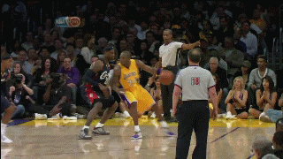
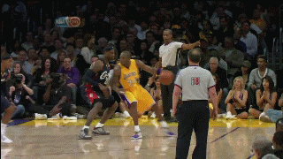

Kobe Bryant
生于美国费城，已退役NBA职业篮球运动员，NBA历史上最伟大球员之一 ，绰号 “小飞侠” 、“黑曼巴 ”（THE MAMBA）、“老大”。身高6英尺6英寸（198公分），体重212磅，主打位置为得分后卫。1996年首次在NBA出赛，2016年球季结束后退役，在他为洛杉矶湖人效力的20年职业生涯中，总得分达到33,643分，位居NBA历史第三位，并取得5次总冠军，2次总决赛最有价值球员，1次年度最有价值球员，2次得分王。另外11次入选NBA最佳阵容，18次入选全明星赛，以及2届奥运会金牌。。2018年，科比凭着动画短片《亲爱的篮球》获得奥斯卡最佳动画短片奖。
 
